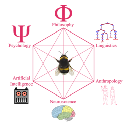

CV
You can download a pdf of my CV by clicking here
I'm a Cognitive Scientist
I was trained (potentially brainwashed) by the brilliant people at Lund University Cognitive Science to see connections between all forms of thinking systems and how they interact.

This image borrowed from Wikipedia is the best I've found that shows how cognitive science is a mix of many fields. However, it left out animal behaviour and biology; ethology. So I added a bumblebee. Obviously a spider would have made more sense sitting in this web. But bumblebees are cuter.